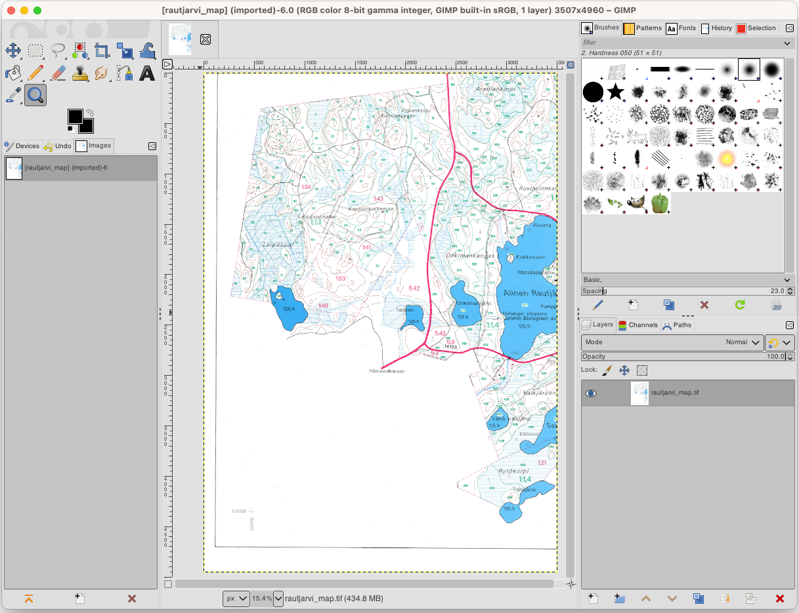
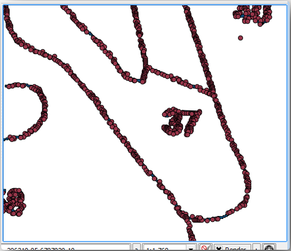
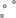

重要
翻訳は あなたが参加できる コミュニティの取り組みです。このページは現在 100.00% 翻訳されています。
14.3. レッスン: 林分をデジタイズする
ジオリファレンスされた地図を単純な背景画像として使うのでなければ、次の自然なステップは、そこから要素をデジタイズすることです。それは レッスン: 新しいベクタデータセットを作る で学校の運動場をデジタイズしてベクタデータを作成する演習ですでにやっています。このレッスンでは、航空写真の代わりにジオリファレンスされた地図を使い、地図に緑色の線で表示されている林分境界線をデジタイズします。
このレッスンの目標： デジタイズ作業の助けになる技法を学び、林分をデジタイズし、最後にそれらに目録データを追加します。
14.3.1. ★☆☆ （初級レベル） 理解しよう: 林分境界を抽出する
前のレッスンで保存した、map_digitizing.qgs プロジェクトをQGISで開いてください。
地図をスキャンし、ジオリファレンスすれば、その画像をガイドとして見ながら直接デジタイズすることができます。デジタイズに使おうとしている画像が、例えば航空写真の場合には、それが最も適した方法でしょう。
ここでの場合のように、デジタイズに使用しているものが良い地図であれば、情報は要素の種類ごとに異なる色の線として明確に表示されているでしょう。これらの色は、 GIMP のような画像処理ソフトウェアを使用すれば、個別の画像として比較的簡単に抽出できます。このような個別の画像はデジタイズの支援に使用できます。それはこの後見ていきます。
最初のステップは、GIMPを使って林分だけ、つまりオリジナルのスキャン地図に見ることができる緑がかったすべての線、を含んだ画像を得ることです:
GIMPを開きます（まだインストールされていない場合は、インターネットからダウンロードするか、先生に頼んでください）。
元の地図画像、
exercise_data/forestryフォルダーにあるrautjarvi_map.tifを で開きます。林分が緑の線で表現されていることに注意してください（各ポリゴン内には林分の番号も緑で表示されています）。 これで林分の境界（緑がかったピクセル）を構成している画像内のピクセルを選択できます：
ツール を開きます。
このツールをアクティブにした状態で、画像を拡大し（Ctrl + マウスホイール）、林分の線が、ラインを形成するピクセルを区別できるほど大きくなるようにします。下の左の画像を見てください。
線の中央でマウスカーソルをクリックアンドドラッグし、ツールが、いくつかのピクセルの色の値を収集するようにします。
マウスクリックを解除し、数秒待って。ツールによって収集された色と一致する画素が画像全体を通して選択されます。
画像全体で緑がかったピクセルが選択されていることを確認するために縮小します。
結果に満足できない場合は、クリックアンドドラッグ操作を繰り返します。
ピクセルの選択は、下の右の画像のようになるはずです。

選択を完了したら、新しいレイヤとしてこの選択をコピーして別の画像ファイルとして保存する必要があります。
選択したピクセルをコピーします（Ctrl+C または ）
そのピクセルを直接新しいレイヤに貼り付けます（）。GIMPは貼り付けられたピクセルを レイヤ パネルに新規レイヤ（
貼り付けられたレイヤー）として表示します。貼り付けられたレイヤー のみが表示されるよう、元の画像レイヤの隣の「目」のアイコンをクリックしてそれを非表示にします:

最後に を選択し、 ファイル形式の選択（拡張子で判別） を TIFF画像 とし、
digitizingフォルダーを選択してrautjarvi_map_green.tifという名前を付けます。聞かれたら、圧縮なしを選択します。
画像内の他の要素で同様の処理を行うことができます。例えば、道路を表す黒い線や地形等高線を表す茶色の線を抽出できるでしょう。しかし私たちにとっては林分で十分です。
14.3.2. ★☆☆ （初級レベル） 自分でやってみよう: 緑色画素の画像をジオリファレンス
前のレッスンで行ったように、この新しい画像は、データの残りの部分とともに使用できるようにするためにジオリファレンスする必要があります。
この画像は、ジオリファレンスツールに関する限り、基本的に元の地図画像と同じ画像であるため、地上基準点をデジタイズする必要はもうないことに注意してください。ここで、覚えておいていただきたいことがあります：
このイメージも勿論
KKJ / Finland zone2CRSです。保存した地上基準点を使用する必要があります、 。
変換設定 を確認することを忘れないでください。
出力ラスタの名前は
digitizingフォルダーのrautjavi_green_georef.tifにします。
新しいラスタが元の地図ときちんと合っていることを確認してください。
14.3.3. ★☆☆ （初級レベル） 理解しよう: デジタイズを助けるポイントを作る
QGISでのデジタイズツールが念頭にあると、デジタイズ中にこれらの緑のピクセルにスナップできたら便利だろうとすでにお考えかもしれません。それはまさに次にしようとしていること、つまり、QGISで利用可能なスナップツールを使ってこれらのピクセルからポイントを作成し、後で林分の境界線に沿ってデジタイズするために使います。
ツールを使用して、緑の線をポリゴンに ベクタ化してください。やり方を覚えていない場合は、 レッスン: ラスタからベクタへの変換 で確認できます。
digitizingフォルダーにrautjarvi_green_polygon.shpとして保存します。拡大してポリゴンがどのように見えるかを見てください。このような物が見えるでしょう：

ポリゴンからポイントを得るための次の選択肢は、その重心を得ることです:
を開きます。
入力レイヤ を
 rautjarvi_green_polygon （今作ったポリゴンレイヤ）に設定します
rautjarvi_green_polygon （今作ったポリゴンレイヤ）に設定しますフォルダー
digitizingのgreen_centroids.shpファイルに 重心 の出力を設定します をチェックします
をチェックします実行 を押します。これでポリゴンの重心が新しいレイヤとして計算され、プロジェクトに追加されます。
 これで、
rautjarvi_green_polygonレイヤをTOCから削除することができます。重心レイヤのシンボロジを次のように変えます:

green_centroidsの レイヤプロパティ を開きます。シンボロジ タブに移動します。
大きさ を
1.00にし、 を選びます
{kind=link}
ポイント１つ１つを区別する必要はありません。それらはスナップツールが使用するためそこにある必要があるだけです。これらのポイントを使用することで、それらがない場合よりもずっと簡単に元の線をたどれるようになりました。
14.3.4. ★☆☆ （初級レベル） 理解しよう: 林分をデジタイズする
これで実際のデジタイズ作業を開始する準備が整いました。 ポリゴンタイプ のベクタファイルの作成から始めますが、この演習では、関心域の一部をデジタイズしたシェープファイルがあります。主要道路（幅の広いピンクの線）と湖の間に残っている林分の半分のデジタイズを完了するだけです：

ファイルマネージャのブラウザで
digitizingフォルダに移動します。forest_stands.shpベクタファイルを地図へドラッグ＆ドロップします。新しいレイヤのシンボロジを変えて、デジタイズしたポリゴンがよく見えるようにします。
塗りつぶし色 を緑にし、不透明度 を
50%に変えます。シンプル塗りつぶし を選んで ストローク幅 を
1.00 mmにします。
さて、過去のモジュールを思い出すと、スナップオプションの設定と有効化が必要です:
に移動します
 スナップを有効にする を押し、詳細設定 を選びます
スナップを有効にする を押し、詳細設定 を選びますgreen_centroids と forest_stands レイヤをチェックします
各レイヤの 型 を :guilabel:`頂点`にします
各レイヤの 許容範囲 を
10にします各レイヤの 単位 を ピクセル にします
forest_stands レイヤの
重なりを避ける をチェックします トポロジ編集 を押します
トポロジ編集 を押します 詳細設定に従う を選びます
詳細設定に従う を選びますポップアップを閉じます

このスナップ設定により、デジタイズ中に重心レイヤのポイントやデジタイズしたポリゴンの頂点に近づくと、そのポイントにピンクの四角が表示されスナップされます。
最後に、 forest_stands と rautjarvi_georef を除くすべてのレイヤの可視性をオフにします。地図画像に透過性がなくなっていることを確認します。
デジタイズを始める前に知っておく重要なポイント：
境界のデジタイズではあまりに正確にしようとしないでください。
境界が直線である場合は、2つのノードだけでデジタイズしてください。一般的に、できるだけ少ないノードを使用してデジタイズしてください。
正確であることが必要と感じた場合のみ拡大して範囲を閉じてください。例えばいくつかの角や、ポリゴンを特定のノードで他のポリゴンと接続したいときです。
デジタイズしながら、マウスの中ボタンを使用して拡大/縮小および地図を移動してください。
一度に1つのポリゴンをデジタイズしてください。
1つのポリゴンをデジタイズした後、地図から読める林分IDを書き込みます。
これでデジタイズを開始できます：
林分番号
357を地図ウィンドウに表示させます。forest_standsレイヤを選択します。 編集モード切り替え をクリックして編集を有効にします
編集モード切り替え をクリックして編集を有効にします ポリゴン地物を追加 ツールを選びます。
ポリゴン地物を追加 ツールを選びます。林分
357のデジタイジングを始め、ドットのいくつかを繋ぎます。スナップを示すピンクの十字に注目してください。
完了すると:
ポリゴンのデジタイジングを終わるには右クリックします。
フォームに林分 ID を入力します（この場合は
357）。OK をクリックします。
ポリゴンのデジタイジングを終了してもフォームが表示されない場合は、 で、 地物作成後に属性フォームをポップアップさせない がチェックされていないことを確認してください。
デジタイズされたポリゴンは次のようになります:

次に、2つ目のポリゴンとして、林分番号358をピックアップします。forest_stands レイヤの Avoid Overlap がチェックされていることを確認してください（上図参照）。このオプションは、ポリゴンが重ならないようにするものです。つまり、既存のポリゴンの上でデジタイズした場合、新しいポリゴンは既存のポリゴンの境界線に合うようにトリミングされます。このオプションを使用すると、共通の境界線を自動的に取得することができます。
林分357と共通する角の一つで林分358のデジタイズを始めてください。
両林分で共通なもう一つの角まで、普通に進めます。
最後に、共通の境界が交差されていないことを確認しながらポリゴン357内のいくつかのポイントをデジタイズします。下の左の画像を参照してください。
右クリックして林分358の編集を終了します。
ID を
358と入力してください。OK をクリックします。新しいポリゴンは、下の画像にあるように、林分357と共通の境界を持っている筈です。
既存のポリゴンと重なっていた部分は自動的に切り落とされ、意図した通りの共通の境界が残されています。
14.3.5. ★☆☆ （初級レベル） 自分でやってみよう: 林分のデジタイズを完了する
これで、2つの林分ができました。そして、続行する方法について良いアイデア。主要道路と湖によって制限されているすべての林分がデジタイズされるまで、自分でデジタイズを続けてください。
それは大変な作業のように見えるかもしれませんが、すぐに林分をデジタイズするのに慣れるでしょう。それは約15分かかります。
デジタイズ中に、ポリゴンを編集したり削除したノードを、分割またはマージする必要がある場合があります。 レッスン: 地物のトポロジ で必要なツールについて学びましたが、今がそれらを読み直す良い機会でしょう。
トポロジの編集を有効 がアクティブな場合、2つのポリゴンに共通のノードを移動すると、その共通の境界は、両方のポリゴンが同時に編集されるようになることを思い出してください。
結果は次のようになります:

14.3.6. ★☆☆ （初級レベル） 理解しよう: 林分データを結合する
地図のために持っている森林目録データは、紙に書かれている可能性があります。その場合は、最初にテキストファイルやスプレッドシートにそのデータを記述する必要があります。この演習では、1994年目録（地図と同じ目録）からの情報は、カンマ区切りテキスト（CSV）ファイルとして準備ができています。
テキストエディタで
exercise_data\forestryディレクトリのrautjarvi_1994.csvファイルを開き、インベントリデータファイルには ID という属性があり、林分の番号が書かれていることに注目します。これらの番号は、ポリゴンに入力した林分のIDと同じで、テキストファイルのデータをベクタファイルにリンクするために使うことができます。このインベントリデータのメタデータは、同じフォルダのrautjarvi_1994_legend.txtというファイルで見ることができます。次にこのファイルをプロジェクトに追加します:
 CSVテキストレイヤを追加 ツールを使用します。これは からアクセスできます。
CSVテキストレイヤを追加 ツールを使用します。これは からアクセスできます。ダイアログで以下のように詳細を設定します:

追加`を押して、フォーマットされた :file:`csv ファイルをプロジェクトに読み込みます。
.csvファイルのデータとデジタル化されたポリゴンをリンクさせるために、2つのレイヤーの間に結合を作成します:forest_standsレイヤのレイヤプロパティを開きます。テーブル結合 タブに移動します。
ダイアログボックスの下部にある
 新規結合(join)を追加 をクリックします。
新規結合(join)を追加 をクリックします。結合するレイヤ に rautjarvi_1994.csv を選択します
結合基準の属性 に ID を設定します
ターゲット属性 に ID を設定します
OK を2回クリックします。
テキストファイルのデータがベクタファイルとリンクしているはずです。何が起こったかを見るには、forest_stands レイヤを選択し、  属性テーブルを開く を使ってください。目録データファイルのすべての属性が、デジタイズしたベクタレイヤにリンクされていることが確認できます。
属性テーブルを開く を使ってください。目録データファイルのすべての属性が、デジタイズしたベクタレイヤにリンクされていることが確認できます。
フィールド名の先頭に rautjarvi_1994_ が付いていることがわかります。これを変更するには:
forest_standsレイヤのレイヤプロパティを開きます。テーブル結合 タブに移動します。
結合するレイヤ rautjarvi_1994 を選択します
- 選択した結合を編集 ボタンをクリックして編集可能にします
- 属性名の接頭辞 の下の接頭辞を取り除きます

.csv ファイルのデータは、ベクタファイルにリンクされているだけです。このリンクを恒久化し、実際にベクタファイルにデータを記録するには、forest_stands レイヤを新しいベクタファイルとして保存する必要があります。これを行うには:
forest_standsレイヤを右クリックしますを選びます
形式 に ESRI Shapefile を設定します
ファイル名を
forestryフォルダ下のforest_stands_1994.shpに設定します新しいファイルをプロジェクトのレイヤとして含めるには、
保存されたファイルを地図に追加する をチェックします

14.3.7. ★☆☆ （初級レベル） 自分でやってみよう: 面積と周囲の長さを追加する
これらの林分に関連する情報を収集するために、林分の面積と周囲の長さを計算することができます。あなたは レッスン: 補足実習 で多角形の面積を計算しました。必要であれば、そのレッスンに戻り、林分の面積を計算してください。新しい属性に Area という名前を付け、計算された値がヘクタールであることを確認します。また、周囲の長さについても同じことができます。
これで forest_stands_1994 レイヤの準備が整い、利用可能なすべての情報を詰め込むことができました。
プロジェクトを保存し、後で戻ってくる必要がある場合に備えて、現在の地図レイヤを保持します。
14.3.8. 結論
これにはマウスを数回クリックする必要がありますが、これで古い登録データをQGISで使用できるデジタル形式で手にいれました。
14.3.9. 次は?
まっさらな新しいデータセットで異なる分析することで開始できますが、より最新のデータセットの分析を行うことにより興味があるのではないでしょうか。次のレッスンのトピックは、現在の航空写真やデータセットにいくつかの関連情報の追加を使用した林分の作成になります。